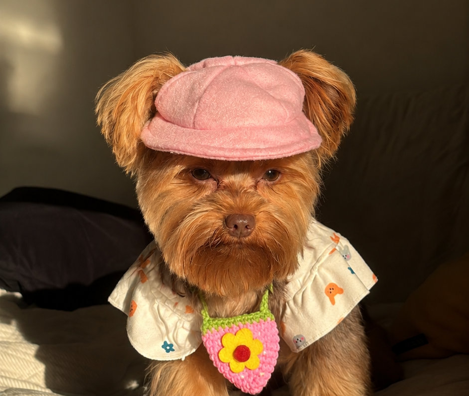

R$ 225,00/mês
Clubinho pequeno porte, sem táxi dog
4 banhos por mês, um por semana. Você leva e busca seu pet.
ConsultarCARINHO QUE VEM DE LONGE. DESDE 1996.
Banho, tosa e aquele cuidado que seu melhor amigo merece. Uma visita de cada vez ou toda semana, com o Clubinho do Pet.
Um pet shop de gente que gosta de bicho.
Com Jorge Loureiro e muito carinho.

DO JEITINHO QUE ELE PRECISA
Escolha um serviço avulso ou um plano do Clubinho e converse com a gente para combinar o atendimento do seu pet.
R$ 225,00/mês
4 banhos por mês, um por semana. Você leva e busca seu pet.
ConsultarR$ 250,00/mês
4 banhos por mês com táxi dog incluso no entorno do bairro.
ConsultarR$ 295,00/mês
4 banhos por mês com tosa inclusa. Você leva e busca seu pet.
ConsultarR$ 320,00/mês
O pacote mais completo: 4 banhos por mês, tosa e táxi dog inclusos.
ConsultarR$ 55,00
Banho completo para cães mini, até 2,5kg, com pelagem curta.
ConsultarR$ 80,00
Banho completo para cães de pequeno porte, com todo o cuidado de sempre.
ConsultarR$ 90,00
Banho completo para cães de médio porte com pelagem curta.
ConsultarR$ 90,00
Banho terapêutico completo, indicado para cuidados especiais de pele.
ConsultarR$ 25,00
Buscamos e levamos seu pet no entorno do nosso bairro.
ConsultarR$ 25,00
Cuidado recomendado com regularidade para o bem-estar do seu pet.
ConsultarR$ 25,00
Limpeza recomendada para evitar problemas de ouvido.
ConsultarR$ 35,00
Hidratação com produtos veganos para deixar o pelo macio e saudável.
ConsultarR$ 45,00
Desembaraço do pelo antes ou durante o banho.
ConsultarR$ 140,00
Vacina importada aplicada, proteção contra as principais doenças caninas.
ConsultarELE JÁ PODE TER UM CLUBINHO PARA CHAMAR DE SEU
O Clubinho do Pet é a mensalidade para manter os banhos na rotina: são 4 banhos por mês, um por semana. E você escolhe os adicionais que fazem sentido para vocês.
Entre para o ClubinhoConsulte o valor da mensalidade e combine os agendamentos.
Escolha como ele chegaLeve seu pet ou consulte o táxi dog, cobrado à parte.
Quer incluir a tosa?Acrescente ao plano mediante a taxa de tosa do Clubinho.
banhos por mêsUm por semana
Seu Clubinho: 4 banhos mensais, levando e buscando seu pet.
Consultar valores no WhatsAppCombine valores, adicionais e horários diretamente com o Clubinho. As escolhas acima são uma simulação, sem contratação.
PRAZER, SOMOS O CLUBINHO
À frente do Clubinho Ambiente Animal está Jorge Loureiro. Desde 1996, a história do pet shop é feita de cuidado com os animais e da relação com quem confia seus companheiros à gente.
Seja para um banho avulso ou para fazer parte do Clubinho do Pet, a conversa começa com você. Conte o que seu pet precisa e vamos combinar o atendimento.
Conheça nosso dia a dia no Instagram ↗VAMOS COMBINAR A PRÓXIMA VISITA?
Fale com a gente para consultar valores, tirar dúvidas
e combinar o melhor horário.